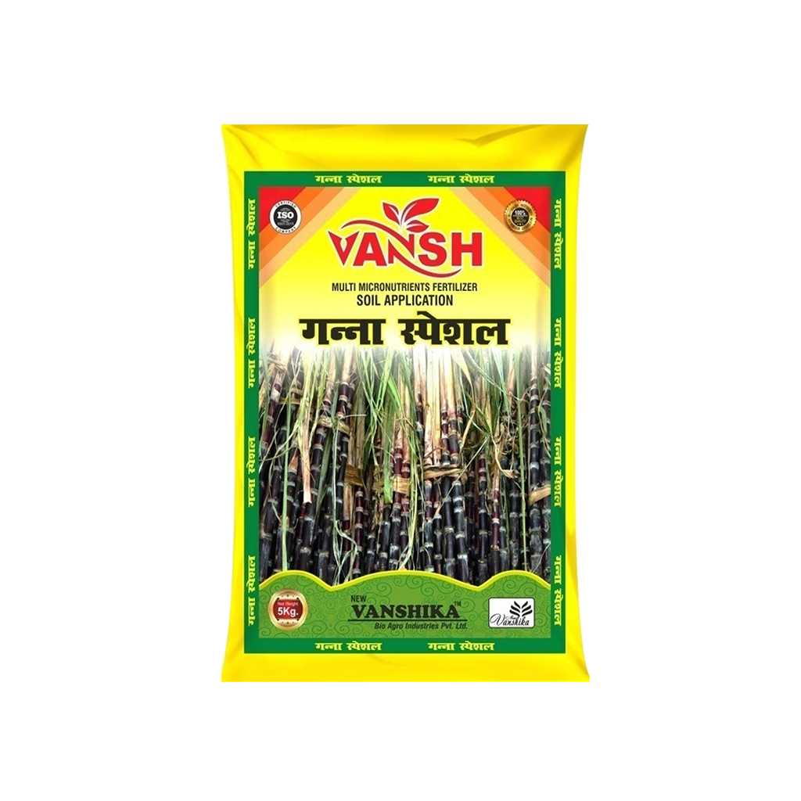

Micronutrients Fertilizer
Sugarcane Special Multi Micronutrient Fertilizer
₹50.40 / Kg
Sugarcane Special Multi Micronutrient Fertilizer is a granular-form micronutrients fertilizer product in the micronutrients fertilizer range. It is listed for soil application for All Crops, Sugarcane, Paddy/Rice.